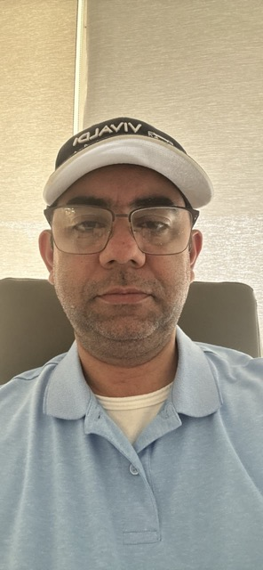

Cristiano Vasconcelos Alves | WDD 130
Hello, my name is Cristiano Alves! I’m a full-time professional in the natural stone industry and a lifelong learner with a deep curiosity for how things work—both in the physical world and in the human spirit. I’m currently pursuing a Computer Science degree through BYU-Pathway Worldwide, and I’m excited about how technology can be used to create, connect, and serve others.
My faith is a central part of who I am. I believe that life has divine purpose and that we grow through seeking truth, serving others, and striving to become a little better each day. My experiences in the Church have taught me humility, gratitude, and the joy that comes from helping others find hope.
Outside of work and study, I have a wide range of interests—I love writing, learning new languages, exploring different cultures, and studying topics like physics and philosophy. I also enjoy quiet moments outdoors, where I can reflect and recharge.
In everything I do, I try to live with purpose, stay curious, and build genuine connections with people wherever I go.